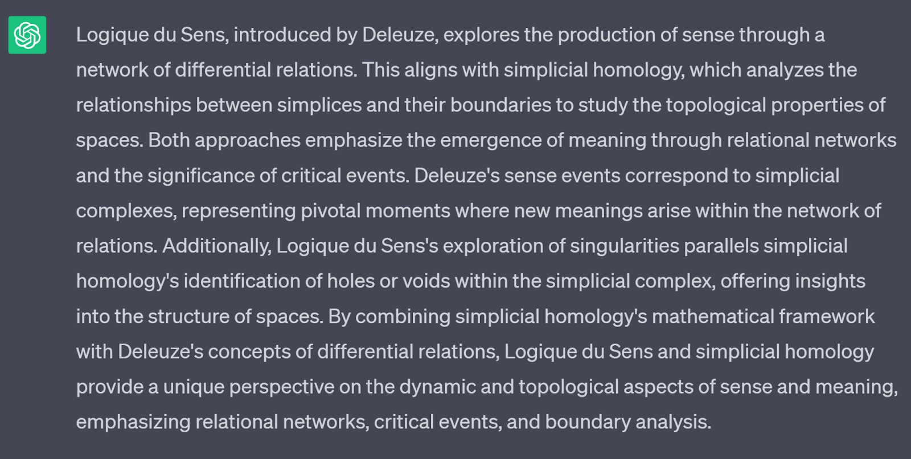
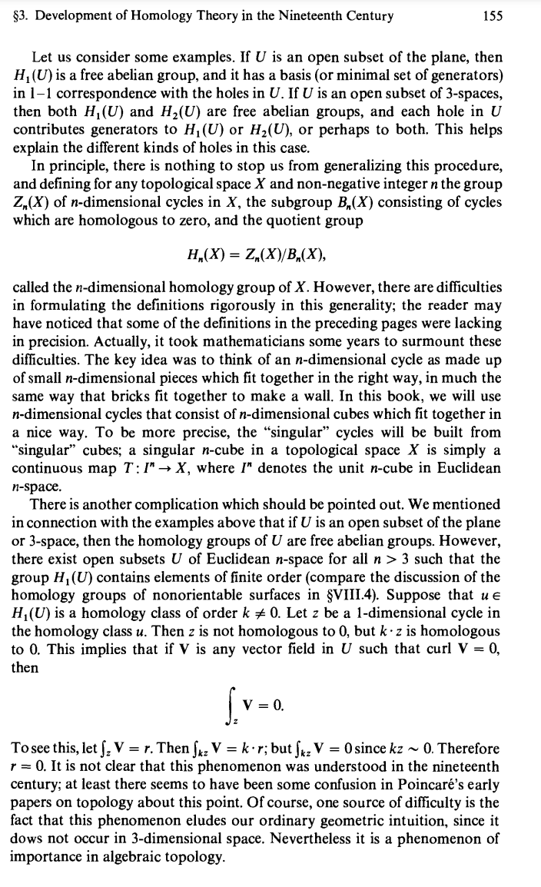

June 10, 2023 (Ed. June 13, 2024)
| Deleuze’s Logic of Sense | Simplicial Homology |
|---|---|
| Structure and genesis of sense | Construction of chain complexes |
| Condition of truth lies in sense | Existence of chains within the chain complex |
| Paradoxes arising from the structure of sense | Regress of indefinite proliferation and sterile reiteration in simplicial homology |
| Multiple expressions of the same denotatum | Multiple simplices representing the same homology class |
| Circular nature of the theory of the proposition | Relations between simplices conditioned by boundary maps |
| Fourth dimension of propositions: expression or sense | Additional dimension of chains within the chain complex |
| Sense as distinct from propositions | Chains having their own identity separate from simplices |
| Fragility of sense leading to nonsense | Nontrivial homology classes representing deeper relationships |
| Surface nonsense exemplified by Lewis Carroll | Boundary cycles and playful elements within the simplicial complex |
| Profound nonsense seen in Antonin Artaud’s writings | Nontrivial homology classes blurring boundaries between language and structure |
| Dynamic genesis of language: primary order, secondary organization, tertiary arrangement | Construction of simplicial complexes, chains, and fully-formed chain complexes |
| Body-without-organs in collaboration with Guattari | Broader applications of simplicial homology beyond individual spaces |
| Materialist and naturalistic leanings | Exploring connections between various domains in simplicial homology |

This started as a half-joke. But, GPT failed me yet again (what a
surprise!).
Let’s step back to a note I made on Stokes’ Theorem.
While Grant Sanderson gives intuitive explanations of each of these
theorems in his Multivariable
Calculus series on YouTube, I thank Prof. Rick Presman for his
exposition of the Generalized
Stokes’ Theorem, and also Prof. Oliver Knill for his exposition via
Calculus
in four dimensions.
And, Aleph Naught’s videos: Stokes’ Theorem on
Manifolds and The derivative isn’t
what you think it is give intuition as to the Generalized Stokes’
Theorem and perhaps differential geometry more broadly.
—
Here is the gist of Prof. Knill’s exposition on generalized integration and, in turn, Stokes’ Theorem.
Note: Prof. Knill does not discuss chains, as this is made for students of multivariable calculus.
First, the ladder from 1-d to 4-d.
In two dimensions, we see: the line integral
\[
\int_a^b F(r(t)) r'(t) \, dt
\]
and the double integral
\[
\iint_G f(u,v) \, du \, dv
\]
In three dimensions, in addition to the line integral, we have the flux integral
\[
\iint_G F(r(u,v)) (r_u \times r_v) \, du \, dv
\]
and the triple integral
\[
\iiint_G f(u,v,w) \, du \, dv \, dw.
\]
To express these integrals using differential forms, we can consider forms with one component for simplicity, but it is straightforward to extend to sums by linearity.
I cannot make Prof. Knill’s exposition and notation here more concise:
For a 1-form \( F = A \, dx \), we integrate \[ \int_a^b A(r(u)) x'(u) \, du. \]
For a 2-form \( F = A \, dx \wedge dy \), we integrate \[ \iint_G A(r(u,v)) \det \begin{bmatrix} r_{u1} & r_{v1} \\ r_{u2} & r_{v2} \end{bmatrix} \, du \, dv. \]
For a 3-form \( F = A \, dx \wedge dy \wedge dz \), we integrate \[ \iiint_G A(r(u,v,w)) \det \begin{bmatrix} r_{u1} & r_{v1} & r_{w1} \\ r_{u2} & r_{v2} & r_{w2} \\ r_{u3} & r_{v3} & r_{w3} \end{bmatrix} \, du \, dv \, dw. \]
This determinant is the triple scalar product of the three column vectors. So, we can still work in principle without having seen any linear algebra course.
For example, for \( F = B \, dy \), we would compute the line integral as
\[
\int_a^b B(r(u)) y'(u) \, du.
\]
And for \( F = A \, dx \wedge dz \wedge dt \), we would compute the hyper flux as \[ \iiint_G A(r(u,v,w)) \det \begin{bmatrix} r_{u1} & r_{v1} & r_{w1} \\ r_{u3} & r_{v3} & r_{w3} \\ r_{u4} & r_{v4} & r_{w4} \end{bmatrix} \, du \, dv \, dw. \]
A \( k \)-form \( F \) assigns, to each point \( x \), a \( k \)-linear anti-symmetric map. It can be represented as \( F_x(v_1, \dots, v_k) \), which yields a number. The maps \( v_j \mapsto F_x(v_1, \dots, v_k) \) are linear, and for any pair \( i, j \), we have \[ F_x(v_1, \dots, v_i, v_j, \dots, v_k) = -F_x(v_1, \dots, v_j, v_i, \dots, v_k). \]
Let \( r: G \to \mathbb{R}^4 \) be a parametrization, where \( G \) is a \( k \)-dimensional region mapped into \( \mathbb{R}^4 \). We can assign to each point \( x = r(u) \) the number \( F_x \, du = F_x(r_{u1}, \dots, r_{uk}) \). The flux of the \( k \)-form through the \( k \)-surface \( r(G) \) is then defined as \[ \int_G F r_u \, du. \]
A 1-form \( F = A \, dx \), gives a line integral \[ \int_a^b F(r(t)) r'(t) \, dt. \]
A 2-form \( F = A \, dx \wedge dy \), gives a flux integral \[ \iint_G F(r(u,v)) (r_u \times r_v) \, du \, dv. \]
A 3-form \( F = A \, dx \wedge dy \wedge dt \), gives a hyper flux integral \[ \iiint_G F(r(u,v,w)) (r_u \times r_v \times r_w) \, du \, dv \, dw. \]
A 4-form \( F = A \, dx \wedge dy \wedge dz \wedge dt \), gives a volume integral \[ \iint\iint_G F(x,y,z,t) \, dx \, dy \, dz \, dt. \]
Now, 4-d to k-d. In four dimensions, we have four integral theorems:
The fundamental theorem of line integrals: \[ \int_a^b d f(r(t)) \cdot r'(t) \, dt = f(r(b)) - f(r(a)). \]
Stokes’ theorem for a region \( G \) with boundary \( C \): \[ \iint_G dF(r(u,v)) (r_u \times r_v) \, du \, dv = \oint_C F(r(u)) \cdot r_u \, du. \]
The hyper Stokes’ theorem: \[ \iiint_G dF(r(u,v,w)) (r_u \times r_v \times r_w) \, du \, dv \, dw = \iint_G F(r(u,v)) (r_u \times r_v) \, du \, dv. \]
The divergence theorem: \[ \iint\iint_G dF(x,y,z,t) \, dx \, dy \, dz \, dt = \iiint_G F(r(u,v,w)) (r_u \times r_v \times r_w) \, du \, dv \, dw. \]
All these integral theorems fall under:
\[
\int_G dF = \int_{\partial G} F,
\]
where \( F \) is a \( k \)-form and \( G \) is a \( k-1 \)-dimensional surface.
The 4-dimensional framework extends to higher dimensions with more variables and larger determinant matrices. Confusion arises in 2 and 3 dimensions due to the identification of different spaces, attempting to fuse ideas that 4-d shows to be distinct.
The overall exterior derivative is a matrix:
\[ d = k=0 df_k. \]
For example, the Dirac operator is:
\[ D = d + d^*, \]
and the Laplacian is:
\[ L = D^2 = d^* d + d d^*. \]
That is a summary of the clearest exposition of the generalized Stokes’ Theorem I have found. I recommend reading Prof. Knill’s article linked above. He also briefly relates PDEs, which Prof. Steve Brunton explains well in his YouTube Series.
I still do not understand spectral sequences (who would’ve thought nLab and Wikipedia do not provide sufficient expositions or problem sets?). Even after Puzzling Through Exact Sequences by Ravi Vakil, I do not understand spectral sequences. Introduction to Spectral Sequences by Michael Hutchings did not quite get me there either.
I understand that they explicate what derived categories implicate. I also understand that a filtration (one topological generalization of a limit from calculus) of chain complexes constructs a spectral sequence. At this point, spectral sequences:
Now, I will defer to nLab’s Simplicial Homology for a connection between simplicial homology and chain complexes, as the other expositions I found do not explicitly state this:
For a simplicial set ( S ) and an abelian group ( A ), the simplicial homology of ( S ) is the chain homology of the chain complex corresponding, under the Dold-Kan correspondence, to the simplicial abelian group of ( A )-chains on ( S ): formal linear combinations of simplices in ( S ) with coefficients in ( A ).
Beyond these tenuous connections, as I learned from Stack Exchange’s very own user316092:
“A Basic Course in Algebraic Topology” by Massey contains an excellent introduction/motivation to homology by relating it to Stokes’/Green’s Theorem (Ch. VI, Section 3, pp. 149–156).
Now, user316092 is not wrong, but who would have thought that such an exposition relies on a better understanding of Algebraic Topology than is offered in Reuben Stern’s 14-page handout: An Introduction to Algebraic Topology for the Harvard Math 101 class?
Now, all I have to do is name-drop the De Rham theorem, which relates the cohomology of De Rham’s complex to the singular complex, as Massey illustrates via Appendix A, proving injectivity via Stokes’ Theorem.
(Note from Izak 1 year later)
I can now claim to understand simplicial homology and chain complexes a
little better after giving my talk on Khovanov homology for a knot
theory writing course.
With that brief look at complexes and Stokes’ theorem, I have just enough leeway to relate Deleuze and Simplicial Complexes, despite my understanding of neither being deep enough.
Speaking of Khovanov homology, the chain complex is the sequence of (bigraded) vector spaces formed from the smoothings (one basis element for each crossing), with differential maps between each pair of vector spaces.
A vector space is just a place where scaling (multiplying by a scalar) and sliding (adding vectors) is preserved.
A differential map simply takes a function and outputs the ratio of that function’s output to its input—commonly called the rate of change.
In this case, vector spaces are the chains in the complex. It’s clearer with the example we’ll see later.
Homology is (a group describing) how much of the remaining vector space looks like its kernel.
For those familiar with linear algebra, the image of each differential is the kernel of the next, so we quotient the kernel by the image.
Quotient here is just like typical division. For example, when we quotient sets of 12 items into sets of 4 items, we find three such 4-item subsets. Now, we consider more than just size.
Specifically, we quotient the elements of each ( n )-th vector space’s kernel by the image of the map into that vector space from the previous or ((n-1))-th vector space:
\[ H_n = \frac{\ker d_n}{\text{im} d_{n-1}}. \]
In fact, the equivalence classes (sets of similar-looking cycles) form a (free Abelian) group, where cycle addition gives class addition. This is the homology group.
We call the elements in the kernel cycles and those in the image boundaries, where every boundary is the differential of some cycle from the preceding vector space.
Simplicial (and even more so, singular) homology defines this via graphs made of triangles, pyramids (or simplices), and their higher-dimensional counterparts.
Then, ( n )-simplices are cycles, and by sequentially removing ((n-1))-simplices, we check which ( n )-simplices are boundaries (i.e., which cycles annihilate with the next differential).
So, asking “how much of the vector space looks like its kernel?” is equivalent to asking “how many cycles look like boundaries?”
If you recall Stokes’ Theorem from vector calculus, it also applies to chains. In other words, the duality between differentials and vectors indicates how we can interpret our vector spaces using this geometric language.
For a smooth function on a manifold, integrating the ((n-1))-form over the boundary of the ( n )-form is exactly the same as integrating the differential of the ((n-1))-form over the ( n )-form:
\[ \int_{\partial \Omega} \omega = \int_{\Omega} d\omega. \]
Now, if you have two chain complexes, you can form (linear) maps from each vector space in one complex to each in the other.
If there are two distinct mappings, this creates what’s called a homotopy. The maps can “continuously” deform into one another.
This induces a homotopy map from an ( n )-chain in one complex to the ((n-1))-chain in the other complex.
It commutes with both the differential maps between the vector spaces and the homology maps.
This “shift down” is simply seeing that:
Two chain-homotopic maps ( f ) and ( g ) act the same on the homology groups because:
\[ (f - g) \text{ sends cycles to boundaries and boundaries to zero.} \]
So, if there are distinct maps between chain complexes, then there are homotopy maps from each chain to the preceding chain in the other complex.
In the case of Khovanov homology, we actually see higher-dimensional chain complexes, that is, complexes in the category of complexes, etc.
The Khovanov chains sum together (via direct sum) those vector spaces with the same bases relative to the all-positive state.
Then, the differential maps between chains are given by (total derivatives of) the differential maps between vector spaces.
Now that I have gotten that out of the way, as this is recreational, I will get to Deleuze’s Logic of Sense.
In “Logic of Sense,” Deleuze focuses on the structure and genesis of sense, contrasting the insights of Frege and Russell with their limitations. He argues that while they recognized the condition of truth lies in sense, they failed to investigate its genesis. Deleuze addresses this problem by examining the paradoxes arising from the structure of sense and proposing a theory of its genesis, drawing from analytic philosophy, Stoicism, and Lewis Carroll’s works. He analyzes three types of relations within propositions: designation, manifestation, and signification. These relations can be taken as primary in different domains of speech, language, and logic. However, Deleuze highlights the circularity within the theory of the proposition, where each condition is conditioned by what it supposedly conditions. To overcome this, he introduces a fourth dimension of propositions, termed expression or sense. Sense represents what is expressed in a proposition, allowing for multiple expressions of the same denotatum. In simplicial homology, the structure and genesis of sense can be related to the construction of chains and cycles within a simplicial complex. The boundary maps encode the connections and relations between simplices, analogous to the relations between sense and propositions.
Deleuze’s philosophy of sense looks at this fourth dimension and its relation to language. He attributes the Stoics with the discovery of sense as they distinguished it from corporeal mixtures and recognized its distinct reality. Sense exists within propositions, yet it is not identical to them; it subsists or insists as its own objectity. It is attributed to states of affairs but cannot be confused with them or their qualities. The structure of sense gives rise to paradoxes, including the regress of indefinite proliferation and the sterile reiteration or doubling. Extracted from propositions, sense becomes a pure ideational event, irreducible to the dimensions of propositions: states of affairs, mental activities, and universals. Deleuze’s logic of sense aims to reconcile the sterility of sense in relation to propositions with its generative power in relation to the dimensions of propositions. The second half of “Logic of Sense” considers the dynamic genesis of language, drawing from developmental psychology and psychoanalysis, highlighting the role of separating sounds from bodies and organizing them into propositions for expressive purposes. The existence of sense within propositions and its distinct reality can be compared to the existence of chains within the chain complex. Sense, like chains, has its own identity and properties that are separate from the individual simplices or states of affairs.
Deleuze outlines the dynamic genesis of language, comprising three stages that correspond to three dimensions: (1) the primary order of pure noise in the newborn infant’s experience; (2) the secondary organization, where the surface dimension of sense emerges through the extraction and synthesis of differential elements; and (3) the tertiary arrangement found in fully-formed propositions with denotation, manifestation, and signification functions. The primary order, resembling a “weatherscape” of intensities, is the initial encounter with language and constitutes a type of nonsense. Through the secondary organization, the child extracts phonemes and constructs series in connective, conjunctive, and disjunctive syntheses. These constructions, though not yet fully formed units of language, go beyond bodily noises. Sense serves as the condition or ground of propositions, generating both their dimensions and their objective correlates. However, the domain of sense is inherently fragile and can slip into nonsense. Deleuze distinguishes two types of nonsense, emphasizing the determinate relation between sense and nonsense and their production from elements lacking inherent sense. The dynamic genesis of language in Deleuze’s work can be connected to the process of constructing chain complexes in simplicial homology. The primary order of pure noise can be seen as the initial simplices or simplicial complexes, the secondary organization corresponds to the construction of chains through boundary maps, and the tertiary arrangement relates to the fully-formed chain complexes with well-defined boundaries.
Deleuze distinguishes between two types of nonsense: surface nonsense exemplified by Lewis Carroll’s wordplay and nonsensical phrases, and profound nonsense found in Antonin Artaud’s writings, where propositions collapse onto the body. Carroll’s nonsense operates at the surface of sense, utilizing non-signifying elements to construct linguistic playfulness. Deleuze identifies the conditions for sense production in Carroll’s work: extracting differential elements, organizing them in series, and the paradoxical element that connects the series. However, the primary order of profound nonsense, seen in Artaud’s schizophrenia, breaks down the distinction between sonorous language and the physical body. The distinction between surface nonsense and profound nonsense can be paralleled with the notion of simplicial homology classes. Surface nonsense, similar to boundary cycles, exhibits playful and non-signifying elements within the simplicial complex. Profound nonsense, like nontrivial homology classes, represents deeper and more complex relationships that blur the boundaries between language and the underlying structure.
Deleuze’s collaboration with Guattari will further develop the concept of the body-without-organs, expanding into a naturalistic philosophy of “desiring-production” encompassing nature, history, and politics. While Logic of Sense engages with the linguistic turn in philosophy, Deleuze ultimately embraces his materialist and naturalistic inclinations. The collaboration between Deleuze and Guattari, expanding into a naturalistic philosophy of “desiring-production,” can be related to the broader applications of simplicial homology beyond individual spaces. Just as simplicial homology can be applied to study nature, history, and politics in a larger context, Deleuze and Guattari’s philosophy extends beyond language and discusses the connections between various fields of study.
More info at (SEP Article) and Jeremy Kun’s Blog (Homology Theory — A Primer)